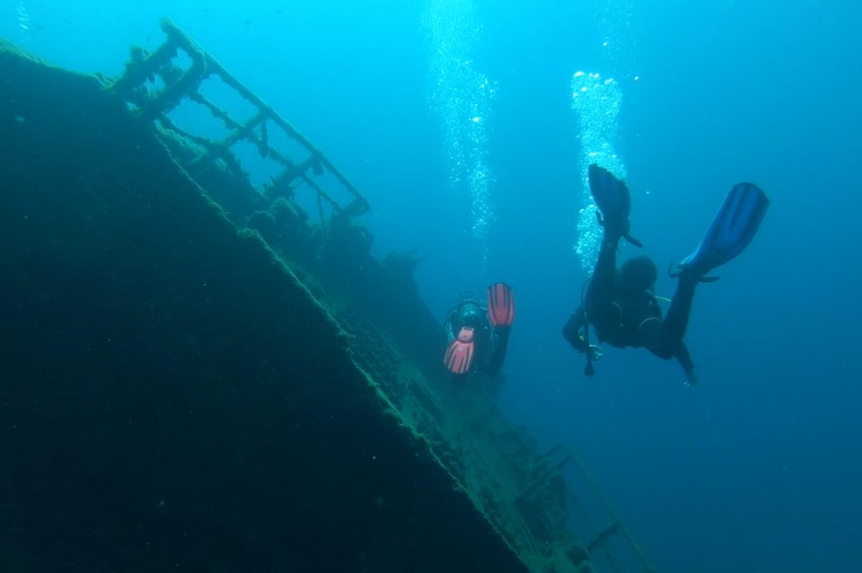

Lanzarote in October 2017

In October, an intrepid foursome headed to Lanzarote for some autumn sun and underwater fun.
The weather was beautiful, hot, sunny and calm waters. The water was a balmy 22 degrees and crystal clear.
We did 7 dives in total, all of which were lovely and easy (max depth was about 27m, great visibility and no current) and with lots of life, especially fish.
We saw: barracuda, shoals of sardines and other unidentified fish, tuna, triggerfish, jacks, an ANGEL SHARK, sting rays, an eagle ray, octopus, cuttlefish, flat fish, nudibranch, squat lobster, cleaner shrimp, moray eel and SEAHORSES!
Plus, we visited the excellent (https://underwatermuseumlanzarote.com/en/) which was a really fantastic and unusual dive among the statues, all of which have a message. What's particularly nice is that they limit the number of divers in the museum at any one time which means you really do get to enjoy the 'exhibits' - I wish they did this at some other dive sites!
We spent our evenings exploring the restaurants of Puerta del Carmen - a surprisingly good variety to choose from, and playing games at our lovely apartment.
Overall, a wonderful, relaxing and beautiful trip!
DETAILS: We dived with Atlantis Diving: http://atlantislanzarote.com/nuevo/ who also arranged our apartment.
by Claire & James